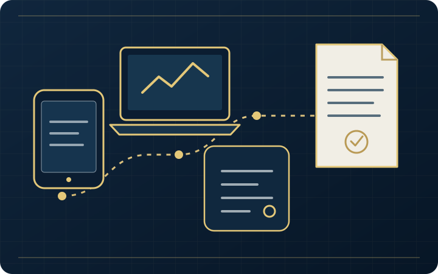
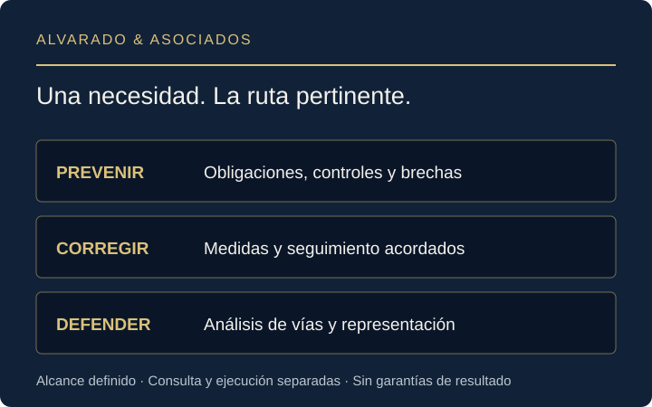
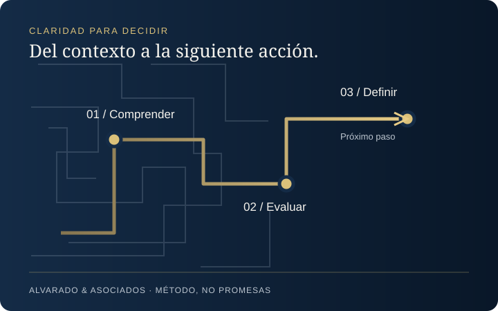

Empresas y directivos
Prevención y respuesta ante contingencias penales, fiscales y administrativas. Compliance y prevención de lavado de dinero según la actividad, con un alcance de trabajo definido.
Conocer las rutas para empresas →Una situación legal compleja necesita algo más que respuestas aisladas. Comprenda sus opciones y defina el siguiente paso con una estrategia penal, migratoria o fiscal.
Claridad para decidir. Método para actuar. Discreción para acompañarle.
Defensa penal: CDMX · Estado de México · Querétaro · Puebla.
Consultas SAT para trabajadores remotos: en línea en todo México, sujetas a confirmar alcance y disponibilidad.
Recuperar el control significa tomar decisiones informadas, no controlar el resultado del procedimiento.
Una sesión para comprender su situación, identificar riesgos y ordenar las decisiones que no conviene improvisar.
La disponibilidad, modalidad, documentación y alcance se confirman antes de agendar. La consulta no sustituye la contratación de una defensa ni garantiza resultados.
Solicitar alcance y tarifa de la consulta →Prevención y respuesta ante contingencias penales, fiscales y administrativas. Compliance y prevención de lavado de dinero según la actividad, con un alcance de trabajo definido.
Conocer las rutas para empresas →Residencia, proyectos patrimoniales y negocios en México. Una lectura coordinada de los aspectos migratorios, contractuales y fiscales.
Plantear mi proyecto en México →Asuntos penales sensibles y representación de víctimas. Comprender la etapa del procedimiento ayuda a formular preguntas y decidir con información.
Solicitar orientación sobre el alcance →Carpetas de investigación, procedimientos penales y representación de víctimas.
Conocer atención penal →Acompañamiento jurídico para quienes viven, invierten o desarrollan negocios en México.
Conocer asesoría a extranjeros →Requerimientos, créditos fiscales, multas y controversias que afectan su patrimonio u operación.
Conocer atención fiscal →La preocupación de la familia es concreta: dónde está, qué audiencia viene y qué puede hacerse dentro del procedimiento. La respuesta exige revisar hechos, tiempos y constancias; no ofrecer una liberación que nadie puede garantizar.
Al asumir una defensa, examinamos la etapa del caso, la legalidad de las actuaciones, los datos disponibles y las alternativas procesales pertinentes. Acordamos cómo comunicar decisiones y avances a la familia, dentro de los límites de confidencialidad.
Si hay detención o audiencia próxima, indique desde el primer contacto el lugar, la fecha y la etapa que conoce, sin enviar expedientes ni datos sensibles en redes. La posibilidad de intervención y la disponibilidad se confirman al revisar su solicitud.
También atendemos carpetas de investigación, representación de víctimas y reparación del daño, investigaciones internas y riesgo penal empresarial.
Solicitar una consulta penal no urgente →Asesoría para extranjeros residentes y personas que buscan establecerse, proteger su patrimonio o realizar negocios en México.
Legal assistance for foreign residents, property owners and businesses in Mexico.
Solicitar asesoría para extranjeros →Analizamos el acto de autoridad, los documentos y la situación del asunto para evaluar las alternativas de atención o defensa.
Defensa ante PAMA, controversias por mercancías retenidas y análisis de créditos y sanciones en comercio exterior.
Evaluamos la procedencia de impugnaciones, amparo y medidas aplicables. Ninguna liberación ni resolución está garantizada.
Un mensaje, un teléfono o una computadora pueden cambiar el rumbo de un asunto. Importa qué muestran, pero también cómo se obtuvieron, conservaron y analizaron.
Coordinamos la revisión jurídica y técnica de evidencia digital para delimitar el objeto del peritaje, las fuentes disponibles y las preguntas que debe responder el informe.

Identificación de fuentes, obtención documentada de copias y registro de integridad y trazabilidad para reducir riesgos de alteración.
Evaluación de adquisición y análisis de información en dispositivos móviles, sujeta a acceso legítimo, estado del equipo y viabilidad técnica.
Imágenes forenses, registros, metadatos, navegación y correo electrónico relevantes para examinar hechos digitales.
Informe técnico comprensible, explicación de hallazgos y preparación de aclaraciones o ratificación ante la autoridad cuando corresponda.
Prevenir, corregir e impugnar requieren decisiones distintas. Definimos con su empresa qué se revisará, qué intervención se propone y cómo se dará seguimiento.
El objetivo es buscar reducir exposición e impacto mediante trabajo jurídico concreto, no prometer inmunidad, ausencia de sanciones ni una resolución favorable.

Partimos de la actividad y las operaciones para revisar obligaciones aplicables, controles y brechas. No se utiliza una plantilla universal ni se confunde una política escrita con su ejecución.
Según el encargo, se propone una matriz de prioridades y un plan de implementación con responsables, entregables y revisión de avances.
Plantear una necesidad de prevención →Revisamos lo detectado, sus antecedentes y la respuesta en curso. Delimitamos medidas y prioridades para coordinar el trabajo jurídico con las áreas de la empresa.
La propuesta distingue lo que debe analizarse, lo que se acuerda ejecutar y cómo se comprobará su realización. No se ofrecen regularizaciones automáticas.
Consultar una contingencia →Analizamos el acto de autoridad, su notificación y los antecedentes para evaluar vías de impugnación, requisitos y medidas que puedan solicitarse según el caso.
Si se contrata la representación, se acuerdan actuaciones, alcance y seguimiento. La procedencia y los efectos de cada vía requieren estudio; no se garantizan suspensiones ni resultados.
Plantear un asunto administrativo →La consulta estratégica inicial contempla la revisión convenida y un informe ejecutivo. La implementación, corrección o defensa posterior requiere una propuesta separada con actividades, entregables, responsables y condiciones.
Para empezar, indique actividad, ciudad y necesidad general. Si recibió una notificación o conoce una fecha relevante, comuníquelo desde el primer contacto. No adjunte expedientes ni datos sensibles en redes.
Solicitar alcance de la consulta →Documentación de afectaciones, análisis de evidencia y cuantificación. Evaluamos las vías jurídicas y la viabilidad de recuperación según el caso, sin promesas de cobro.
Consultar sobre reparación →Controversias contractuales y empresariales que requieren una estrategia probatoria y patrimonial. Valoramos riesgos, alternativas de negociación y posibilidades de ejecución.
Consultar un asunto mercantil →La estrategia se vuelve útil cuando puede entender qué se sabe, qué falta revisar y qué acción sigue. Usted participa en las decisiones; el despacho aporta análisis y una ruta jurídica.
El método organiza el trabajo. No sustituye el estudio del expediente ni promete una resolución favorable.

Escuchar el objetivo, ubicar hechos y fechas relevantes y distinguir lo confirmado de lo pendiente. Acordar qué documentación requiere revisión.
Analizar riesgos y alternativas. Explicar qué información podría cambiar la estrategia y qué decisiones requieren atención.
Proponer próximos pasos y responsables. Al contratar, acordar el canal de contacto, los reportes de seguimiento y la revisión al cierre del asunto.
Una empresa recibe una notificación. Comprender: identificar documento, fecha y contexto. Evaluar: revisar alcance y alternativas con el abogado. Definir: acordar la actuación, quién aporta información y cuándo revisar avances.
Es una ilustración del proceso, no un caso real, un testimonio ni una recomendación aplicable a cualquier notificación.
Defensa penal en CDMX, Estado de México, Querétaro y Puebla. Consultas SAT para trabajadores remotos en línea en todo México, sujetas a confirmar alcance y disponibilidad. La cobertura no implica oficinas físicas en cada ubicación.
El área, la ubicación y la etapa general del asunto. Evite enviar documentos completos, datos de terceros o detalles sensibles hasta acordar un canal y el alcance de la revisión.
No. Primero muestra una vista previa en esta página. Sólo al pulsar el segundo botón se abre WhatsApp con el texto para que usted decida enviarlo. También puede llamar directamente al despacho.
No. Primero se revisa la posibilidad de intervención y se acuerdan alcance y condiciones. No se garantizan resultados ni tiempos de resolución.
La consulta estratégica inicial tiene tarifa fija, comunicada antes de confirmar. La intervención posterior se cotiza según naturaleza, etapa, complejidad y alcance; puede estructurarse por fases cuando corresponda. Las condiciones se presentan por escrito.
Solicite el alcance de una consulta estratégica. Si existe una notificación o fecha relevante, indíquelo de forma general; no espere una respuesta por formulario para atender una urgencia.
Defensa penal: CDMX · Estado de México · Querétaro · Puebla.
Consultas SAT para trabajadores remotos: en línea en todo México, previa confirmación de alcance y disponibilidad.